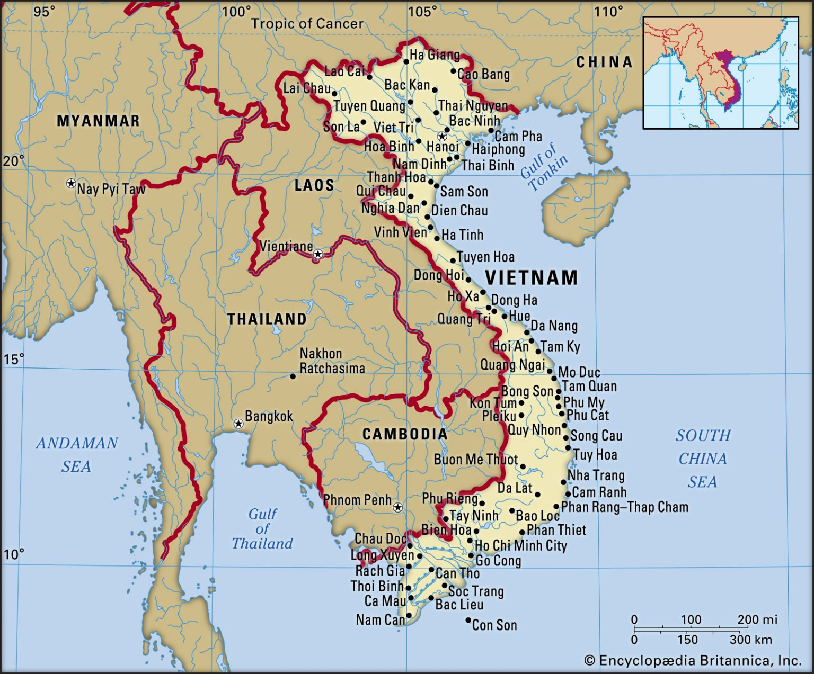

Vietnam es un país del Sudeste Asiático localizado en el extremo más oriental de la península de Indochina. Su extensión es de 331.000 kilómetros cuadrados. Limita al este y al sur con el Mar de China Meridional (Océano Pacífico), al norte con China y al oeste con Camboya y Laos. El territorio de Vietnam se divide en está dividido en 58 provincias más 5 municipalidades administradas directamente por el gobierno central. A su vez, las provincias se subdividen en distritos, ciudades y municipios. Por su parte, las municipalidades controladas por el gobierno central se dividen en distritos rurales y distritos urbanos, y éstos en entidades más pequeñas llamadas en salas. La división por regiones, herencia del pasado colonial francés, todavía se usa para agrupar las diferentes provincias. Este es el listado de regiones de Vietnam:
|
 |